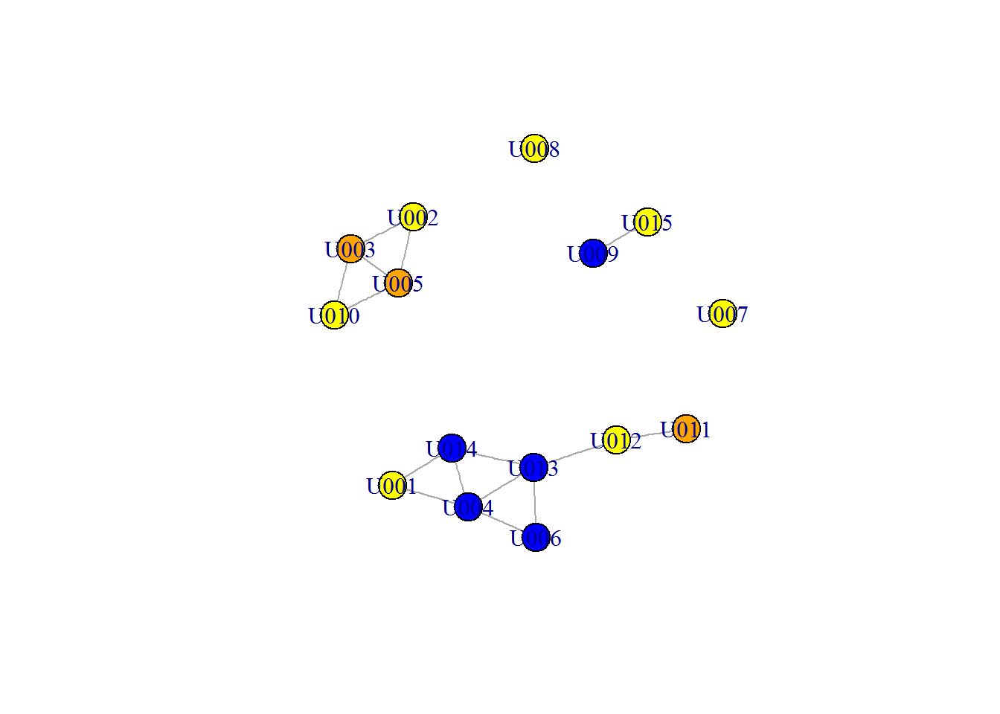
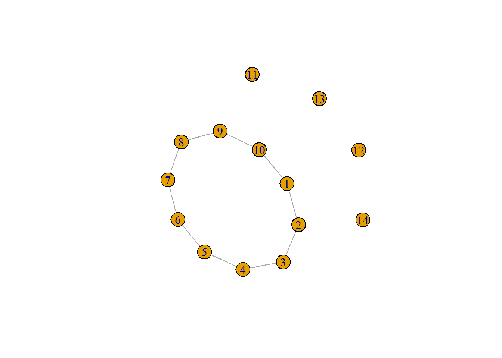
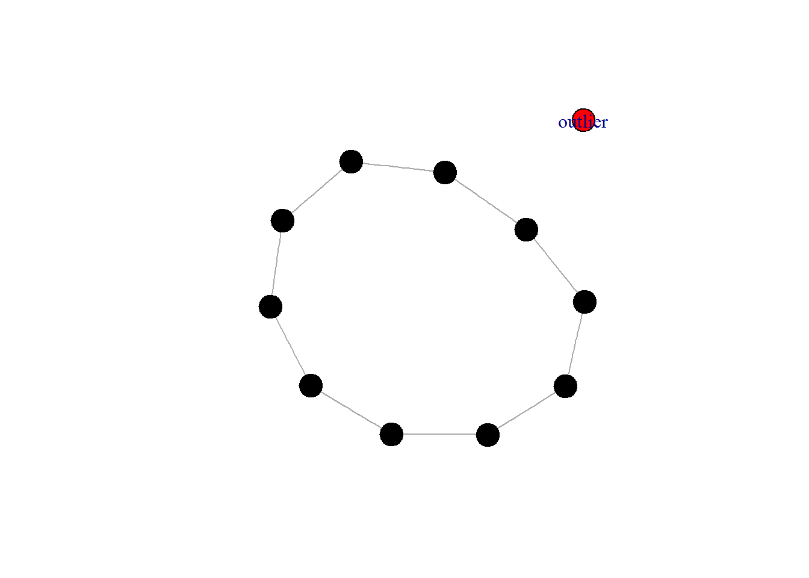
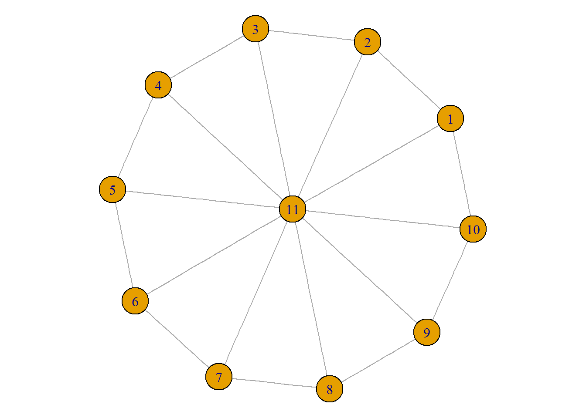
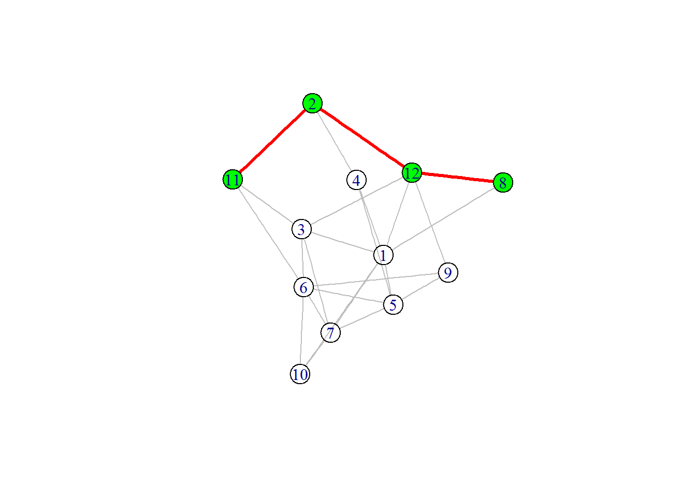

GraphTheory
Kirsten Dutcher
November 2, 2016
LECTURE NOTES
Introduction to Graph Theory
A GRAPH IS A MATHEMATICAL REPRESENTATION OF A NETWORK. Graph often refers to a mathematical representation of a network, using terms like vertex and edge, while a network often refers to the real system, using terms like node and link. A graph represents A relationship between elements of a set, where a set of nodes is connected pairwise by edges
Nodes=vertices (ex: vertices = {A, B, C, D, E})
Edges=links (ex: edges = {AB}, {AC}, {B,C}, {C,E})
YOU DEFINE THE RELATIONSHIPS TO REPRESENT. Graph theory has been used to represent: transportation networks, social networks, economic networks, protein interaction networks, ecological networks (foodwebs, disease networks, resource use networks, connectivity networks from movement data). In ecology, path analysis and circuit theory use graph theory.
WHY YOU MAY WANT TO USE A NETWORK:
- They provide information on interactions
- Once we understand network topology we can think about the consequences of network organization
- We can ask what factors led to network organization.
A study by Sah et al. (2016) asked if burrow refugia provide social networks for tortoises (a relatively solitary species)? And if so, what characteristics make up highly popular burrows? Knowing where these are and how tortoises relate to their environment is critical at a point in time when the Mojave is experiencing high levels of habitat loss and fragmentation. Tortoise use of burrows was surveyed. A bipartite network (where nodes of different types were allowed to connect) showed burrow use, popularity, and switching. From there the authors created a social network.They found that reduced burrow switching is associated with juveniles, stress, and poor habitat conditions.Burrow popularity could be identified for critical habitat and terrain and future work could simulate networks to determine how a development that causes the loss of burrow refugia might impact the network and potentially reduce social contacts.
A study by Aiello et al. (2014) examined the potential impacts of translocation and disease transmission. Moving animals from place to place is often done with great care regarding translocatee health and resident pop density. What if there is a diseased individual in the resident pop? How might that disease spread prior to translocation? Following translocation?Make a series of contact networks based on biweekly movement data with residents and translocated individuals. To answer this, they used a control group with no translocation and a resident population with subsequent translocation. Animals were followed via radio-telemetry. The authors randomly selected diseased individuals in the resident populations with varying probabilities of transmission and created contact networks at various time steps. The nearest neighbor networks were based on inferred contact (100 m within 3 days).The disease networks in the control group don’t change too much. However, the simulation predicts high levels of contact and betweenness following translocation. This provides information on interactions, and illustrates that translocation may spread disease in an immunocompromised resident population even if all translocatees are thought to by healthy.
BACKGROUND MATH
The max number of edges in a simple complete graph:
\(Emax=N(N-1)/2\)
Where N=node, E=edge
To find the distance between nodes start at any node (1), find nodes adjacent to 1, mark them as distance x=1, from these find adjacent nodes, mark as x+1, repeat until you find all nodes.
You can build an adjacency matrix based on node distances, actual distances, genetic distances. Simple adjacency matrices are binary and contain data on contact (1) or no contact (0).
In a graph, degree (k) = number of edges connected to a node and betweenness is a measure of the number of paths that pass through a node.
igraph is on CRAN and the igraph package can be found at: http://igraph.org/r/
You will also need to access a couple other libraries to work through this example
install.packages("igraph")library(igraph)##
## Attaching package: 'igraph'## The following objects are masked from 'package:stats':
##
## decompose, spectrum## The following object is masked from 'package:base':
##
## unionlibrary(sp)
library(dismo)## Loading required package: rasterlibrary(NetIndices)## Warning: package 'NetIndices' was built under R version 3.3.2## Loading required package: MASS##
## Attaching package: 'MASS'## The following objects are masked from 'package:raster':
##
## area, selectLECTURE EXAMPLE - ECOLOGICAL NETWORK
Let’s assume you have movement data from a common lizard species and you want to find out how connected this species is on the landscape. First, read in the .csv found on the UNR course website:
uta<-read.csv("uta_simulated_data.csv")Let’s look at a summary of individuals by their ID:
summary(uta$ID)## U001 U002 U003 U004 U005 U006 U007 U008 U009 U010 U011 U012 U013 U014 U015
## 68 66 59 67 68 69 64 68 66 45 32 38 22 23 20Now we are going to break up the day, week, and year column into a new numeric column to identify connections based on temporal overlap:
uta$Date2 <- as.Date(uta$Date , "%m/%d/%Y")
uta$Week <- as.numeric(strftime(uta$Date2,format="%W"))
uta$Year <- as.numeric(strftime(uta$Date2,format="%Y"))
uta$YW <- paste(uta$Year, uta$Week, sep='_')
uta$YW <- factor(uta$YW)as.Date converts between character representations and objects of the date class. as.numeric creates objects of a numeric. strftime converts between characters and objects of classes representing calendar dates and times. paste concatenates vectors. factor encodes a vector as a factor. %m = abbreviated month, %Y = full year.
To remove lines of data when the animal was tracked, but not located, or when UTM’s (eastings) are missing:
uta <- subset(uta, Attempted2TrackOnly != 'Yes')
uta <- subset(uta, is.na(Easting) != T)This is subseting the data for attempted tracking not equal to yes, and na for easting not equal to true. Only lines where attempted to track is not yes and easting is filled in are kept.
The summary now shows the same number of individuals, but fewer observations.
summary(uta$ID)## U001 U002 U003 U004 U005 U006 U007 U008 U009 U010 U011 U012 U013 U014 U015
## 68 62 59 67 67 68 63 68 66 45 25 37 22 23 20Now we need to create an empty matrix for each pairwise location:
utapairs <- matrix(data = 0, nrow = length(unique(uta$ID)), ncol = length(unique(uta$ID)), dimnames = list(unique(uta$ID),unique(uta$ID)))This matrix uses the unique ID once for rows and once for columns in the matrix and is populated with zeros.
Run a for loop to fill in the matrix, which is actually a loop within a loop within a loop within a loop:
tmp <- uta[1,]
for (i in 1:length(unique(uta$YW))){
tmp1 <- subset(uta, YW == unique(uta$YW)[i])
tmputa <- factor(unique(tmp1$ID))
for (l in 1:length(tmputa)){
tmp[l,] <- tmp1[match(tmputa[l],tmp1$ID),]
}
tmpxy <- data.frame(x=tmp$Easting, y=tmp$Northing)
tmpsp <- SpatialPoints(tmpxy)
d <- pointDistance(tmpsp,longlat=F)
for(j in 1:length(tmputa)){
for(k in 1:length(tmputa)){
if (j==k){
utapairs[as.character(tmp$ID[j]),as.character(tmp$ID[k])] <- 0
} else if (d[j,k] < 101){
utapairs[as.character(tmp$ID[j]),as.character(tmp$ID[k])] <- utapairs[as.character(tmp$ID[j]),as.character(tmp$ID[k])] + 1
}
}
}
}This for loop, with loops inside loops, is a way to fill in the matrix and associate date (YW) with ID (because ID and YW are repeated), then use the unique ID (now unique ID and unique YW) with UTMs as spatial points, finally ID (unique ID and unique YW) is looped twice to fill in the matrix by rows and columns (instead of row by row or column by column) and populate the matrix by utapairs. The matrix is filled in as 0 if animals were >100 m apart in the same YW, and filled in with 1 if <101 m apart. Since there is more than one observation for each individual ID the for loop will run through the matrix repeatedly, adding nothing if >100 m in the same YW, adding 1 if <101 m.
Call utapairs to see the matrix created:
utapairs## U004 U006 U005 U007 U001 U002 U008 U009 U003 U010 U011 U012 U013 U014
## U004 0 1 0 0 2 0 0 0 0 0 0 0 8 9
## U006 1 0 0 0 0 0 0 0 0 0 0 0 1 0
## U005 0 0 0 0 0 6 0 0 3 3 0 0 0 0
## U007 0 0 0 0 0 0 0 0 0 0 0 0 0 0
## U001 2 0 0 0 0 0 0 0 0 0 0 0 0 1
## U002 0 0 6 0 0 0 0 0 10 0 0 0 0 0
## U008 0 0 0 0 0 0 0 0 0 0 0 0 0 0
## U009 0 0 0 0 0 0 0 0 0 0 0 0 0 0
## U003 0 0 3 0 0 10 0 0 0 10 0 0 0 0
## U010 0 0 3 0 0 0 0 0 10 0 0 0 0 0
## U011 0 0 0 0 0 0 0 0 0 0 0 2 0 0
## U012 0 0 0 0 0 0 0 0 0 0 2 0 1 0
## U013 8 1 0 0 0 0 0 0 0 0 0 1 0 8
## U014 9 0 0 0 1 0 0 0 0 0 0 0 8 0
## U015 0 0 0 0 0 0 0 1 0 0 0 0 0 0
## U015
## U004 0
## U006 0
## U005 0
## U007 0
## U001 0
## U002 0
## U008 0
## U009 1
## U003 0
## U010 0
## U011 0
## U012 0
## U013 0
## U014 0
## U015 0Notice that the matrix is not fillid in using distance in meters or number of edges between pairs. Rather it is populated with the number of contacts between pairs.
Now we create an object to graph and call it to see the adjacency object of vertices and edges.
uta_graph <- graph.adjacency(utapairs, weighted=T, mode = "undirected")
uta_graph## IGRAPH UNW- 15 15 --
## + attr: name (v/c), weight (e/n)
## + edges (vertex names):
## [1] U004--U006 U004--U001 U004--U013 U004--U014 U006--U013 U005--U002
## [7] U005--U003 U005--U010 U001--U014 U002--U003 U009--U015 U003--U010
## [13] U011--U012 U012--U013 U013--U014Weighted means the graph edges are of values other than only 0 and 1. This allows for the production of a weighted graph in the future, where vertices that have weighted edges can be shown as different thicknesses. (For example: if 2 lizards came into contact only once the line would be thin; however, if contact were made 7 times, the line conecting them would be fairly thick). Undirected means the edges connect without arrows. If I wanted to create a directed graph they edges would be directional.
Examine the names in uta_graph:
V(uta_graph)$name## [1] "U004" "U006" "U005" "U007" "U001" "U002" "U008" "U009" "U003" "U010"
## [11] "U011" "U012" "U013" "U014" "U015"Look at all the edges in the dataset and all the vertices:
E(uta_graph)## + 15/15 edges (vertex names):
## [1] U004--U006 U004--U001 U004--U013 U004--U014 U006--U013 U005--U002
## [7] U005--U003 U005--U010 U001--U014 U002--U003 U009--U015 U003--U010
## [13] U011--U012 U012--U013 U013--U014V(uta_graph)## + 15/15 vertices, named:
## [1] U004 U006 U005 U007 U001 U002 U008 U009 U003 U010 U011 U012 U013 U014
## [15] U015You can convert back to a table to look at your vertices and edges:
as_data_frame(uta_graph, what = "vertices")## name
## U004 U004
## U006 U006
## U005 U005
## U007 U007
## U001 U001
## U002 U002
## U008 U008
## U009 U009
## U003 U003
## U010 U010
## U011 U011
## U012 U012
## U013 U013
## U014 U014
## U015 U015as_data_frame(uta_graph, what = "edges")## from to weight
## 1 U004 U006 1
## 2 U004 U001 2
## 3 U004 U013 8
## 4 U004 U014 9
## 5 U006 U013 1
## 6 U005 U002 6
## 7 U005 U003 3
## 8 U005 U010 3
## 9 U001 U014 1
## 10 U002 U003 10
## 11 U009 U015 1
## 12 U003 U010 10
## 13 U011 U012 2
## 14 U012 U013 1
## 15 U013 U014 8You can query the data to see if an edge exists:
uta_graph["U004", "U006"]## [1] 1Anything above 1 = yes, an edge (or edges) exists between these.
uta_graph["U004", "U015"]## [1] 00 = no edge connection. This provides a way for you to check your data to see if you have specific connections of interest or not.
You can also see all adjacent vertices of a specified vertex:
uta_graph[["U004"]]## $U004
## + 4/15 vertices, named:
## [1] U006 U001 U013 U014Now lets graph all the individuals in the network:
plot.igraph(uta_graph)
Determine paths between two vertices. (in this case using “distance” will tell you how many times these 2 individuals came into contact because the for loop was built as “no contact=0” and “contact=previous contact+1”, so a “distance” of 5 is not a measure of actual distance, but number of contacts between these 2 inividuals. You can look at the matrix structure to verify this).
distances(uta_graph, 'U004', 'U011')## U011
## U004 5Or use table to look at all your “distances” (i.e. number of contacts in this example) between connections:
table(distances(uta_graph))##
## 0 1 2 3 4 5 6 7 8 9 Inf
## 15 10 8 12 6 6 6 2 2 4 154We can determine the degree at a single vector:
degree(uta_graph, 'U004')## U004
## 4Or for the entire dataset:
degree(uta_graph)## U004 U006 U005 U007 U001 U002 U008 U009 U003 U010 U011 U012 U013 U014 U015
## 4 2 3 0 2 2 0 1 3 2 1 2 4 3 1Degree is an important measure of how connected an individual is. Knowing how many connections individuals have lets you evaluate how connected or isolated they are.
Degree can be sorted (as can distance and betweenness):
sort(degree(uta_graph))## U007 U008 U009 U011 U015 U006 U001 U002 U010 U012 U005 U003 U014 U004 U013
## 0 0 1 1 1 2 2 2 2 2 3 3 3 4 4We can also calculate betweenness centrality for all the vertices:
betweenness(uta_graph)## U004 U006 U005 U007 U001 U002 U008 U009 U003 U010 U011 U012 U013 U014 U015
## 8 9 3 0 5 0 0 0 0 0 0 5 8 0 0In this example knowing the “betweenness” is an indicator of individuals that may be highly important links connecting other individuals or populations. Loosing these individuals or their habitat may result in disarticulation of the observed network structure and lead to potential isolation.
If we want to look at the structure of these relationships is by throat color:
ingraph_names <- as.character(V(uta_graph)$name)
throatvals <- as.character(uta$Throat[match(V(uta_graph)$name, uta$ID)])
uta_graph2 <- set_vertex_attr(graph=uta_graph, name="throat", index=V(uta_graph), value=throatvals)
V(uta_graph2)$throat## [1] "B" "B" "O" "Y" "Y" "Y" "Y" "B" "O" "Y" "O" "Y" "B" "B" "Y"V(uta_graph2)$color=V(uta_graph2)$throat
V(uta_graph2)$color=gsub("O","orange",V(uta_graph2)$color)
V(uta_graph2)$color=gsub("Y","yellow",V(uta_graph2)$color)
V(uta_graph2)$color=gsub("B","blue",V(uta_graph2)$color)
plot.igraph(uta_graph,vertex.label=uta_graph$ID,layout=layout.fruchterman.reingold,vertex.color=V(uta_graph2)$color)
CHEATSHEET TO USEFUL EXPRESSIONS IN IGRAPH
V(dataset) ####returns all vertices V(dataset)[#, #:#] ####shows vertices in the specified positions V(dataset)[degree(dataset) < #] ####finds vertices satisfying the specified condition (degree=number of edges connected to a node) V(dataset)[nei(‘vertex name’)] ####shows vertex neighbors V(dataset)[‘vertex name’, ‘vertex name’] ####selects given vertices E(dataset) ####returns all edges E(dataset)[vertexset %–% vertexset] ####shows all edges between two vertex sets (in the yeast example a vertex set could be Class or Descrition)
EXCERCISE #1 - BASIC GRAPH TUTORIAL
In this excercise we will walk through building basic graphs with code provided.
Use make_empty_graph to create a dataset of 10 meaningless points:
graph <- make_empty_graph(10)
graph[-1, 1] <- TRUE
graph## IGRAPH D--- 10 9 --
## + edges:
## [1] 2->1 3->1 4->1 5->1 6->1 7->1 8->1 9->1 10->1Add vertices, then plot a RING GRAPH:
graph <- make_ring(10) + 4
plot(graph)
Add attributes:
graph <- make_(ring(10), with_vertex_(color = "black")) +
vertices('outlier', color = "red")
plot(graph)
Make a directed STAR GRAPH:
graph <- make_(star(10), with_edge_(color = "black"))
plot(graph)
(notice all the edge connections are directed arrows feeding into node #1)
Add a chain of edges:
graph <- make_(empty_graph(5)) + path(1,2,3,4,5,1)
graph2 <- make_(empty_graph(5)) + path(1:5, 1)Call graph and graph2 to see what the data look like. Then, graph the plots and see if they are different. Why or why not?
Create a WHEEL GRAPH:
graph<-make_star(11, center = 11, mode = "undirected") + path(1:10, 1)
par(mar = c(0,0,0,0)); plot(graph)
CREATING PATHS IN GRAPH - start by making some random data using set.seed to randomly generate numbers and sample_gnp to create every possible edge with equal probability:
set.seed(42)
graph <- sample_gnp(12, 0.25)Now we will build a path between vertices:
mypath <- V(graph)[11, 2, 12, 8]Then assign them graph attributes:
V(graph)[mypath]$color <- 'green'
E(graph)$color <- 'grey'
E(graph, path = mypath)$color <- 'red'
E(graph, path = mypath)$width <- 3PLOT THE PATH IN THE GRAPH:
plot(graph, margin = 0, layout = layout_nicely)
EXCERCISE #2 - YEAST PROTEIN-PROTEIN INTERACTION NETWORK
Installed public data sets from: https://github.com/igraph/igraphdata
install.packages("igraphdata")Import dataset:
library(igraphdata)## Warning: package 'igraphdata' was built under R version 3.3.2data("yeast")
data()View the matrix for yeast protein:
yeastMake sure you can see which proteins are connected to each other in this example.
To create a simple graph from a multigraph, specify what it should do with edges:
yp <- simplify(yeast, edge.attr.comb =
list(name = "sum", Class = "sum", Description = "sum", "ignore"))Check to make sure the graph is simple and view the summary info:
is_simple(yp)## [1] TRUEsummary(yp)## IGRAPH UN-- 2617 11855 -- Yeast protein interactions, von Mering et al.
## + attr: name (g/c), Citation (g/c), Author (g/c), URL (g/c),
## | Classes (g/x), name (v/c), Class (v/c), Description (v/c)Convert back to tables to see the vertices and edges tables - hint: use code from lecture example.
Query the data to see if an edge exists between two randomly selected proteins.1 (or more) = yes, an edge exists between these, 0 = no edge connection
You can also see all adjacent vertices of a specified vertex:
yp[["YPR110C"]]How do you see all vertices?
All edges?
What does the plot for the network look like?
Call yp:
yp## IGRAPH UN-- 2617 11855 -- Yeast protein interactions, von Mering et al.
## + attr: name (g/c), Citation (g/c), Author (g/c), URL (g/c),
## | Classes (g/x), name (v/c), Class (v/c), Description (v/c)
## + edges (vertex names):
## [1] YLR197W--YPL093W YLR197W--YER006W YLR197W--YHR052W YLR197W--YGR162W
## [5] YLR197W--YOL041C YLR197W--YPL043W YLR197W--YOR310C YLR197W--YPL012W
## [9] YLR197W--YMR049C YLR197W--YLR409C YLR197W--YLR222C YLR197W--YOL077C
## [13] YLR197W--YPL126W YLR197W--YDR496C YLR197W--YGR145W YLR197W--YGR103W
## [17] YLR197W--YLR175W YLR197W--YNL132W YLR197W--YOR206W YLR197W--YNL061W
## [21] YLR197W--YMR290C YLR197W--YBL004W YLR197W--YGR090W YLR197W--YJL109C
## [25] YLR197W--YDR449C YLR197W--YER082C YLR197W--YCR057C YLR197W--YDR324C
## + ... omitted several edgesNote that IGRAPH means this is a graph object, that is undirected (U) and named (N). (D=directed, B=bipartate, like the graph of tortoises and burrows, W=weighted)
Look at the yeast classes. What does #1(E) signify?
Determine the shortest path between two vertices (choose any 2 randomly) using distance. (note:this will provide the shortest path calculated based on the number of edges).
You can also use table to look at all your distances between connections:
table(distances(yp))You can sort the distances:
sort(rowMeans(distances(yp))[1:15])## YLR197W YOR039W YDR473C YOR332W YER090W YDR394W YER021W YPR029C YIL106W
## Inf Inf Inf Inf Inf Inf Inf Inf Inf
## YKL166C YGL026C YOR061W YGL115W YGL049C YDL140C
## Inf Inf Inf Inf Inf InfWhy might this be useful?
What is the code to determine the degree of a single vector?
What code provides degrees for the entire dataset?
How would you calculate betweenness centrality? Why might you want to?
Feel free to explore the additional datasets in your igraphdata library!
Acknowledgements
I would like to thank Ken Nussear (UNR-Geography) for suppling simulated data frameworks, sharing code, and continued assistance with R. Also, Kevin Shoemaker (UNR-EECB) for additional help understanding R and contributing to the code presented here.